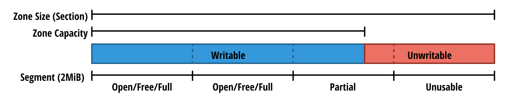

이 글은 USENIX ATC '21 에 소개된 ZNS: Avoiding the Block Interface Tax for Flash-based SSDs 논문을 읽고 정리한 것입니다.
본 글은 #draft 상태입니다.
- 내용 정리
1. Introduction
- 본 논문에서는 아래의 다섯가지 contribution 을 소개한다:
- 기존의 Block SSD 와 ZNS SSD 간의 성능 비교
- ZNS 에 대한 전반적인 리뷰
- Host software layer 에 ZNS SSD 적용하는 과정에서 배운 점들
- ZNS 를 사용하기 위해 Storage stack 전반을 수정한 내용
- 여기에는 Linux 커널, F2FS 파일시스템, NVMe 드라이버, Zoned Block Device 서브시스템, fio 벤치마크 툴이 포함된다.
- RocksDB 에서 ZNS SSD 를 사용하기 위한 새로운 스토리지 백엔드로 ZenFS 구현
2. The Zoned Storage Model
2.1. The Block Interface Tax: 기존 방식의 문제점
- Block Interface 는 이전의 HDD 를 위해 고안된 것으로, 고정된 크기의 block 들을 1차원 배열로 묶어 사용/관리하는 방식이다.
- SSD 가 등장했을 때에는 이러한 Block interface 와의 backward-compatibility 를 위해 FTL 과 같은 레이어가 추가되었다.
- 하지만 SSD 와 HDD 는 작동 방식이 다르기에 FTL 은 여러 부작용 을 낳았다.
- 위의 자원들 중 OP 와 DRAM 은 모두 현재의 SSD 가 감수해야 하는 아주 비싼 자원들이다.
- Block interface 를 위해 고안된 FTL 은 Host 가 LBA 에만 접근할 수 있도록 하여 Host 의 물리적인 데이터 저장 위치를 관리 권한이 박탈되었다.
2.2. Existing Tax-Reduction Strategies: 문제점을 해결하기 위해 이전에 시도된 것들
- Multi-stream SSD: GC 를 줄이는데 도움은 되나, 여전히 OP 공간과 FTL 을 위한 DRAM 을 필요로 한다.
- OCSSD: GC 도 줄이고 OP 공간과 DRAM 의 필요성을 줄여주었지만, 모든 SSD 에 대응할 수 있는 인터페이스가 OS 에 구현되어야 하기 때문에 한계점이 있다.
2.3. Tax-free Storage with Zones: 문제를 해결하기 위한 접근
- “Backward-compatibility 는 포기하더라도, SSD 를 위한 새로운 방식의 Interface 를 만들자” 라는 생각으로 Block Interface Tax 문제에 접근한 것이 Zoned Storage Model 이다.
- 해당 Model 에 대한 NVMe 의 구현체인 ZNS 는 이러한 기능을 제공해 준다:
- Zoned Storage Model 와 완벽하게 호환됨
- SSD 의 특징을 최대한으로 이끌어내 성능을 높임
- (OCSSD와는 다르게) 각 디바이스의 특성과는 무관함
3. Evolving towards ZNS: ZNS를 도입해 보자
- ZNS 는 data placement 및 gc 과정을 host 에게 위임함으로써 device level 의 WAF 를 없앴고, 따라서 OP 도 적게 사용하며 성능과 ssd 의 수명도 늘렸다
3.1. Hardware Impact
Zone Sizing
- Zone 은 여러 die 의 block 들 (이것을 stripe 라고도 한다) 로 구성된다.
- Zone size 가 커지는 것은 더욱 많은 die 의 block 들을 응집할 수 있으므로, (1) die-level fault 에서 데이터를 보호하기 쉽고 (2) 병렬 처리율이 높아진다는 장점이 있다.
- 반대의 극단을 생각해보면 이해가 빠르다: zone 의 block 이 한 die 에 속하게 된다면,
- (1) 해당 die 에 문제가 생기면 zone 전체가 날라가게 되고 1
- (2) 해당 die 에만 command 를 실행할 수 있으므로 병렬처리율도 낮아져 성능도 낮아진다.
- 반대로 커지는 것에 대한 단점은 zone 의 갯수가 작아지기 때문에 data placement 선택권이 낮아져 ZNS 의 이점을 살리지 못한다.
- 만일 storage 전체를 커버하는 zone 하나만이 존재한다고 생각해 보자.
- 그럼 모든 종류의 lifecycle 을 가지는 data 들이 하나의 zone 에 포함되게 되고, 결국에는 gc 를 해야 하거나 reset 시 valid data 가 날라가게 된다.
- 따라서 data placement 선택권을 최대한 주기 위해 zone size 를 최대한 줄이되, die-level fault 에 영향과 병렬 처리율 감소를 감당할 수준이 될 정도까지만 줄였다고 한다.
- 만일 reliability 를 포기한다면 zone(stripe)-wide parity 를 없애서 zone size 를 더욱 더 줄일 수 있으나 host level 에서 이런 parity 를 구현하거나 작아진 zone size 를 위해 IO queue depth 를 늘리는 것과 같은 희생을 감내해야만 한다.
Mapping Table
- 기존의 Block interface SSD 에서는 Fully-associative mapping table (Page level mapping) 을 사용했는데, 이것은 당연히 엄청난 양의 DRAM 공간을 필요로 한다.
- 하지만 ZNS 의 Sequential write constraint 는 이것을 erase block level 혹은 hybrid fashion 으로 바꿀 수 있게 해서 DRAM 공간을 줄이거나 필요성을 아예 없앨 수도 있다고 한다.
- 어떻게 ZNS 가 이런 것을 가능하게 하는지는 설명 안한다.
Device Resources
- 이것은 Open Zone Limit 과 연관된 내용이다.
- Active zone 의 data 와 parity 를 위해서는 XOR 엔진이나 SRAM, DRAM 같은 자원과 parity 보존을 위한 power capacitor 가 필요하다.
- 하지만 zone 의 data 와 parity 의 사이즈는 아주 크고 2 자원의 양은 한정되어 있기 때문에 8개에서 32개의 active zone 만을 유지할 수 있고 이것이 Open Zone Limit 으로 제한걸려있는 것.
- 이 active zone 개수를 늘리기 위해서는 다음과 같은 전략을 취할 수 있다고 한다 3 :
- 더 많은 자원을 구비하거나 (adding extra power capacitors)
- 최적화를 통해 자원 사용량을 줄이거나 (utilizing DRAM for data movements)
- Parity 를 조금 포기하는 방법
3.2. Host Software Adoption
- 이 섹션에서는 ZNS 를 도입하기 위한 host software 변경 세 가지를 소개한다:
- Host-side FTL (HFTL)
- File System
- End-to-End Data Placement
- ZNS 는 sequential write 가 기본 원리에 깔려있기 때문에, sequential write 를 자주 사용하는 application 에 적합하다.
- 가령 LSM Tree 와 같은 것들
- 당연히 in-place update 가 잦은 시스템은 ZNS 도입이 어렵다.
Host-side FTL (HFTL)
- 이놈은 ZNS 의 sequential write 와 application 의 random write (+ in-place update) 간의 다리 역할을 해준다.
- 기존의 FTL (SSD FTL) 과의 차이점은
- 이름이 HFTL 인 만큼 SSD 에 포함되는 것이 아닌 Host OS 에 포함되는 계층이라는 것
- SSD FTL 의 역할 중 (1) address translation mapping 과 (2) GC 만 담당하는것 이다.
- 이놈이 host 에서 작동한다는 것은, 다음과 같은 장단점을 가질 수 있다:
- 일단 장점으로는 host 의 정보를 활용하여 data placement 와 gc 를 수행할 수 있도록 해준다
- 단점 (주의할 점?) 으로는 host 와 cpu 및 mem 을 공유하기에 너무 많은 cpu 와 mem 을 먹지 않도록 해야 한다고 한다.
- 이것의 구현체는 다음과 같은 것들이 있다고 한다:
File System
- File system 은 application 들이 “file” 형식으로 storage 에 접근할 수 있도록 해준다.
- File system 을 zone 과 통합함으로써 4, 여러 overhead 들 (data placement overhead 혹은 indirect overhead 5 와 같은 FTL 과 HFTL 이 발생시키는 overhead) 을 없앨 수 있다고 한다.
- 또한 file 의 데이터 특성 정보들을 data placement 에 활용할 수 있다.
- 적어도 이러한 정보들이 file system 에서 인지할 수 있도록 해준다.
- 대부분의 file system 들은 in-place write 를 사용하기 때문에 zone 을 사용하기 힘들다.
- 하지만 f2fs, btrfs, zfs 는 sequential write 자주 사용하고, 따러서 zone 또한 지원하도록 업데이트 되었다고 한다.
- 물론 모든 write 가 sequential 한 것은 아니다; superblock 이나 metadata 같은 경우에는 in-place write 를 사용한다.
- 하지만 이러한 non-sequential write 의 경우에는 strict log-structured write, floating superblock 과 같은 방법을 이용해 해결할 수 있다고 한다.
- 이러한 file system 에는 HFTL 의 로직들이 많이 포함된다고 한다.
- Metadata 를 통해 on-disk 로 관리되는 LBA mapping table 이랄지
- GC 기능이랄지
- 하지만 논문 작성 당시 위 file system 들은 ZAC/ZBC 만을 지원했고, 따라서 본 논문에서는 f2fs 에서 ZNS 를 지원하도록 개발했다고 한다.
End-to-End Data Placement
- End-to-End Data Placement 는 application 이 중간 fs 와 같은 layer 를 거치지 않고 직접 device 에 data placement 를 실시하게 하는 것이다.
- 이렇게 함으로써 application 에는 data placement 에 대한 최대의 자율성을 제공해 줄 수 있고
- 동시에 indirection overhead 5 도 줄일 수 있다.
- 또한 application 자체에서 raw block device 에 접근하는 것이기에 성능이 향상되고 WAF 도 줄어든다.
- File system 을 포기하는 것은 당연히 쉬운 일은 아니다; file 형식을 사용할 수 없기 때문에, application 에 직접 zone support 를 추가해야 되고, data inspection, error checking, backup/restore operation 을 위한 tool 또한 제공되어야 한다.
- 이 방법을 사용하기에 용이한 application 은 당연히 sequential write 를 활용하고 있는 것들이고, 여기에는 대표적으로
- LSM 을 활용하는 RocksDB
- 캐싱 스토어인 CacheLib
- 오브젝트 스토어인 Ceph SeaStore
- 본 논문에서는 RocksDB 에 ZNS E2E Data Placement 를 지원하기 위한 ZenFS 를 개발하였고, 이것을 f2fs 를 사용했을 때 등과 비교했다고 한다.
4. Implementation
- 본 논문에서는 ZNS support 를 위해 다음의 4가지 기여를 했다고 한다.
- Linux kernel 수정
- F2fs 수정
- Fio 수정
- ZenFS (ZNS 용 RocksDB backend store) 개발
4.1. General Linux Support
- Linux kernel 의 Zoned Block Device (ZBD) subsystem 은 zoned storage model 을 따르는 device 들에 대한 API 를 제공해 준다.
- 이 API 들에는 list devices, report of zones, zone management (open, reset 등) 이 포함된다.
- Kernel-level 및 user-level (
ioctl) API 모두 제공한다더라.
- 이런 API 들을 활용해 fio 와 같은 툴들이 device-speecific 하지 않은 zoned storage model operation 을 이용하게 된다.
- 본 논문에서는,
- ZBD subsystem 에서 ZNS SSD 를 등록하거나 나열할 수 있게 하기 위해 NVMe 드라이버를 수정했고
- ZNS 를 테스트할 때 활용하기 위해 ZBD subsystem 에 zone capacity attribute 와 active zones limit 을 추가했다고 한다.
Zone Capacity
- Linux kernel 은 모든 zone 에 대한 zone descriptor data structure 6 들을 host memory 상에 저장해 두고 사용하고, 문제가 생겼을 경우에는 특정 디스크로부터 다시 가져와서 사용한다.
- 논문의 저자들은 Zone descriptor data structure 에 zone capacity 라는 attribute 를 추가했다고 한다.
- 그리고 fio 와 f2fs 에서 해당 attribute 를 사용하기 위한 수정을 했다.
- fio 의 경우에는 그냥 zone capacity 내에서만 IO 를 수행하도록 수정하면 되었지만,
- f2fs 의 경우에는 수정할 것이 많았다고 한다.

- 기존의 f2fs 는 다음과 같은 특징을 가졌다고 한다.
- f2fs capacity (zone capacity 랑 다른거임) 는 segment (2MiB) 단위로 관리되고, 이 segment 들이 모인 것을 section 라고 하며, 이놈의 크기가 zone size 이다
- f2fs 는 section 의 segment 들에 sequential write 를 수행하고,
- 일부만 write 할 수 있는 segment 따위는 없었다.
- 여기에 zone capacity 를 f2fs 에서 지원하기 위해 다음과 같은 변경이 이루어졌다
- 기존의 세 segment type (free, open, full) 이외에 두개의 segment type (unusable, partial) 이 추가되었다고 한다.
- unusable 은 zone 의 unwritable part (아마 zone size 에서 zone capacity 를 제하고 남은 공간) 을 나타내는 segment
- partial 은 unwritable 과 writable 이 섞여있는 segment (zone capacity 가 끝나고 unwritable 이 시작되는 부근의 segment)
- 즉, zone capacity 크기가 segment 크기의 배수가 아닌 경우에 partial 이 생김
- 기존의 세 segment type (free, open, full) 이외에 두개의 segment type (unusable, partial) 이 추가되었다고 한다.
- SMR HDD 에는 zone capacity 를 지원하지 않기 때문에, zone capacity 는 zone size 와 동일하게 초기값이 설정된다.
Limiting Active Zones
- Active Zone Limit 은 Zoned Block Device subsystem 에서 device listing 을 할 때 인식되어 kernel/user-space API 로 노출된다.
- 이것은 ZNS SSD 만의 특징이기에 SMR HDD 에는 필요하지 않는 값이고, 따라서 0으로 초기화된다.
- Fio 의 경우에는 이것을 위한 수정사항은 없다고 한다; 그냥 사용할 때 알아서 이 limit 을 지켜야 하고, 만일 그렇지 않는다면 IO error 가 발생한다.
- F2fs 의 경우에는 이 limit 이 f2fs 의 open segment limit 7 과 결부된다. f2fs 에서는 open segment limit 을 6으로 제한해 놓았고, 만일 device 가 active zone limit 을 6까지 지원하지 않는 다면, 그에 맞게 조정할 수 있다.
주인장의 한마디
- Zone 은 여러 segment 들로 구성되는 것을 고려해 보면, open segment limit 이 너무 적은 것 아니냐 싶을 수 있다.
- 근데 아마 zone 당 open segment 를 1개씩만 유지하는 것이 아닐까 싶다.
- Zone 은 어차피 writing pointer 가 있는 segment 에만 write 할 것이기 때문에, 해당 segment 만 open 하면 되지 않을까.
- 따라서 f2fs 의 open segment limit 이 6이기 때문에, f2fs 를 사용할 때에는 active zone limit 도 6을 넘지 못할 것 같다.
- F2fs 는 메타데이터를 Conventional Zone 에 저장하는 것을 필요로 한다.
- Zoned Storage Model 에도 있는 만큼 ZNS SSD 에서 이것을 지원하는 것이 기본이고, 따라서 본 논문의 저자도 이것과 관련해서는 딱히 수정을 하지 않았다고 한다.
- 하지만 어떤 ZNS SSD 의 경우에는 이것을 지원하지 않는 경우도 있을 것이고, 이때에는 btrfs 나 dm-zap 에서 처럼 Sequential write required zone 에서 일반적인 block interface 를 제공하도록 기능을 추가할 수도 있을 것이다.
- F2fs 에서는 Zoned device 들에서 SSR 기능을 사용하지 못하도록 되어 있다.
- 이것은 어느 정도 성능 저하를 유발할 수 있는데, 그럼에도 불구하고 ZNS SSD 의 전반적인 빠른 성능때문에, 일반 SSD 에서 f2fs-SSR 기능을 사용했을 때보다 더 성능이 좋았다고 한다.
4.2. RocksDB Zone Support
- 이 섹션에서는 RocksDB 에서 Zoned device 를 사용하기 위해 ZenFS 라는 backend store 를 구현한 것에 대해 설명한다.
- ZenFS 는 RocksDB 의 LSM 과 seqential-only compaction 를 ZNS SSD 에서 효율적으로 수행할 수 있게 도와준다.
RocksDB 기본 설명
Log Structured Merge Tree
- RocksDB 에서의 LSM tree 는 인메모리 Memtable 와 저장장치에의 여러 level 들 (L0 ~ LMAX) 로 구성되는데
- 우선 memtable 에 데이터가 저장되고, 이후 주기적 혹은 memtable 의 공간이 부족해지면 L0 로 flush 된다.
- Memtable 의 내용은 WAL 이 작성되어 crash recovery 를 지원한다.
- Memtable 에서 L0 으로 flush 될 때는 key 를 기준으로 중복 제거 및 정렬되어 SST 로 저장된다.
- 이 SST 들은 변경이 불가능하고 sequential write 되며 SST 단위로 생성과 삭제된다.
- Level 은 사이즈가 exponential 하게 증가하고, 각 level 에는 여러 SST 파일들이 key 범위가 겹치지 않게 저장된다.
- 하위 level 로 내리는 작업은 Compaction 를 통해 수행된다.
- Compaction 에서는 현재 level 의 SST 와 다음 level 의 SST 가 병합되어 다름 level 의 새로운 SST 로 생성되게 된다.
- 낮은 level 로 갈수록 오래된 key-value 가 저장되기에 자연스럽게 hot-cold separation 이 달성된다.
Backend Storage API
- RocksDB 는 File System Wrapper API 를 통해 다양한 backend storage 를 단일 인터페이스를 통해 사용할 수 있도록 설계되어 있다.
- Wrapper API 는 데이터의 단위 (SST 파일 혹은 WAL 등) 을 고유한 식별자 (파일 이름 등) 으로 식별한다.
- 이 식별자들은 파일과 같은 하나의 연속된 주소 공간 (byte-addressable linear address space) 상에 저장된다.
- 이 식별자들에 대해서는 add, remove, current size, utilization, random access, sequential r/w 의 연산이 가능하다.
- 따라서 이런 연산들은 file interface 과 유사하기에, RocksDB 도 file 을 주된 backend store 로 사용한다.
- 즉, 데이터 접근이나 버퍼링, free space management 등을 fs 의 도움을 받아서 사용하는 것이 흔하나
- File system 을 거치지 않고 zone 에 직접 data 를 넣는 e2e 방식을 사용하면 더욱 성능이 좋아질 것이기에 ZenFS 를 개발하게 된 것.
4.2.1. ZenFS Architecture
- 정리하자면 ZenFS 는 ZNS SSD 의 특성을 최대한 살려 RocksDB 에서 사용할 수 있도록 FS 의 필수적인 것만 구현한 것이다.
Journaling and Data
- ZenFS 는 두가지 종류의 zone 이 존재한다:
- Journaling Zone: 이것은 다음과 같은 용도로 사용된다:
- FS 의 crash recovery
- Superblock 구조 유지
- WAL 과 data file 을 zone 에 매핑
- Data Zone: 일반적인 data file 을 저장
- Journaling Zone: 이것은 다음과 같은 용도로 사용된다:
Extents
- Data file 들은 Extent 라는 단위로 저장되고, 또 이들은 하나의 data zone 에 sequential write 된다.
- Extent 는 (1) 가변 크기 (2) 블럭 단위 (3) 연속된 공간 이라는 특징을 가진다.
- 특정한 ID 와 연관된 데이터들이 들어있다
- 하나의 zone 에는 여러 extent 가 들어가지만 extent 가 zone 을 넘칠 수는 없다.
- Extent 에 대한 metadata 8 는 인메모리에 자료구조에 기록된다.
- Extent metadata 에는 를 할당하고 반환하는 것, extent 가 어느 zone 에 매핑되었는지 추적하는 등이 포함된다.
- 이것은 Extent 의 file 이 close 되거나 rocksdb 가 명시적으로 flush 하면 journal zone 에 기록된다.
- Zone 의 모든 extent 에 할당된 파일들이 모두 삭제되면 zone 은 reset 될 수 있다.
Superblock
- Superblock 은 ZenFS 를 초기화하거나 복구할 때 첫 진입점이 된다.
- 현재의 상태에 대한 ID 값, magic value 9, user option 등이 저장된다.
- “현재의 상태에 대한 ID 값” 은 system 에서의 device 순서가 바뀌어도 (가령 재부팅 이후
/dev/nvme0에서/dev/nvme1로 바뀌는 등) filesystem 을 식별할 수 있게 해준다.
Journal
- ZenFS 가 journaling 을 하는 것은 아래의 두가지 목적을 위해서 이다:
- Superblock 저장
- WAL 과 data file 이 어떤 extent 를 통해 어떤 zone 에 매핑되었는지를 추적
- 당연히 journal state 는 journal zone 에 저장되는데, 이것은
OFFLINE상태가 아닌 첫 두 zone 으로 지정된다.- 두 zone 은 번갈아 사용되며 journal state update 가 logging 된다.
- (F2FS 에서처럼 이전 버전의 journal zone 을 보존해놓는 용도 아닐까)
- Journal zone 에는 제일 먼저 header 가 저장된다.
- Header 에는 (1) sequence number (새로운 journal zone 이 초기화될 때마다 증가하는 값) (2) superblock 자료 구조 (3) 현재의 journal state 에 대한 스냅샷 (journal snapshot) 이 들어간다.
- header 가 저장된 이후에는 journal update 들이 쭉 logging 된다.
- Journal zone 를 이용해 ZenFS 를 초기화하는 것은 다음과 같은 세 단계로 진행된다.
- 두 journal zone 의 첫 LBA 를 읽은 후, 여기의 header 에서 sequence number 를 읽어와 어떤 journal zone 이 더 최신인지 (어떤 zone 이 active zone 인지, 더 sequence number 가 높은지) 확인한다.
- Active zone 의 header 전체를 읽어들여 superblock 과 journal state 를 초기화한다.
- journal update 를 쭉 따라가며 journal snapshot 에 반영한다.
- Journal update 를 어디까지 따라가며 journal snapshot 에 반영할지는 zone 의 상태와 write pointer 에 따라 결정된다.
- 만일 zone 이
OPEN혹은CLOSED상태라면 현재 write pointer 가 있는 위치까지의 journal update 가 반영된다. - 만일 zone 이
FULL상태라면 header 뒤의 모든 journal update 가 반영된다.- 만일 zone 이
FULL상태라면 recovery 이후 나머지 한 journal zone 이 active 가 되며 초기화 후 journal update 를 logging 하게 된다.
- 만일 zone 이
- 만일 zone 이
- Fresh journal state 를 생성하는 것은 타 file system 의 초기화 툴과 비슷한 방식으로 진행된다.
- ZenFS 의 fresh journal state 초기화 툴은 journal zone 에 sequence number 초기값, superblock, 빈 journal snapshot 로 이루어진 header 를 저장한다.
- 만일 RocksDB 에 의해 ZenFS 가 초기화되면 상기한 모든 recovery process 가 실행되고, RocksDB 로 부터 데이터를 받아들일 준비가 된다.
Writable capacity in Data Zones
Data Zone Selection
Active Zone Limits
Direct I/O and Buffered Writes
Evaluation
5.1. Raw I/O Characteristics
5.2. RocksDB
5.3. Streams
6. Related Work
7. Conclusion
ZNS 특징
- ZNS 는 flash erase boundary 와 write ordering rule 들을 Host 에 노출시켜서 이러한 세금을 해결한다고 한다.
- NVMe Zoned Namespace Command Set Specification
- 기존의 Block interface 는 Block 을 1차원 배열로 취급해 관리했지만, ZNS 는 logical block 들을 zone 으로 묶는다
- zone 의 블럭들은 random read 는 가능하지만 무조건 sequential write 되어야 한다.
- 또한 zone 은 매 rewrite 작업때마다 erase 되어야 한다.
- ZNS SSD 는 zone 과 physical media boundary 를 정렬해서 데이터 관리를 Host 가 직접 하도록 한다?
- ZNS 는 디바이스들마다 다른 reliability 특성들과 media 관리 복잡성은 Host 로부터 감춘다?
- ZNS 는 효율적으로 erase block 을 하기 위한 책임을 Host 로 이전한다.
- LBA-PBA 매핑과 데이터 저장 위치 선정을 통합하는 것보다는 이러한 FTL 의 책임 중 일부를 Host 에 이관하는 것은 덜 효과적이다?
ZNS 성능 측정
- Concurrent write 수행시 ZNS SSD 가 Block SSD 보다 2.7배 Throughput 이 좋았다.
- Random read 수행시 ZNS SSD 가 Block SSD 보다 64% 낮은 Latency 를 보여줬다.
- RocksDB 를 f2fs + ZNS SSD 와 POSIX fs + Block SSD 에서 사용했을 때, ZNS 를 사용할 때가 2-4 배 낮은 random read latency 를 보여줬다.
- 또한 RocksDB 를 ZenFS + ZNS 에서 사용했을 때, POSIX + Block SSD 를 사용했을때 보다 2배 높은 throughput 을 보여줬다.

- 위 그림은 ZNS SSD 와 OP 가 다르게 설정된 Block SSD 두개 총 세개의 SSD 의 write throughput 을 실험한 것이다.
- 실험은 SSD 의 물리 사이즈인 2TB 데이터를 총 4번 concurrent 하게 write 하는 방식으로 진행했다. (0
2: 첫번째 write, 24: 두번째 write, 이런식으로 아마?) - 첫 write 에서는 SSD 가 fresh 한 상태였기에 세 SSD 간의 성능 차이가 없었지만, 두번째 write 부터는 기존 데이터가 overwrite 되며 Block SSD 들에서 성능 저하가 나타났다.
- 또한 Block SSD 끼리 비교했을 때에는, OP 를 더 많이 설정한 SSD 가 그나마 성능 저하가 덜 나타나는 것으로 확인됐다.
- 다만 28% OP 를 먹인 SSD 의 경우에는 공간이 부족하기 때문에 write 가 6TB 을 넘어가자 더이상 기록되지 않는 것을 볼 수 있다.
Footnotes
-
다만, (1) 의 경우에는 본문에서는 좀 다른 뉘앙스로 말한다. 여러개의 die 에 분산되어 있으면 parity 를 구성하기 용이하기에 여러 die 에 분산시키는 것이 protection 에 유리하다고 한다. - “There is a direct correlation between a zone’s write capacity and the size of the erase block implemented by the SSD. In a block-interface SSD, the erase block size is selected such that data is striped across multiple flash dies, both to gain higher read/write performance, but also to protect against die-level and other media failures through per-stripe parity.” ↩
-
본문에서는 zone 사이즈가 큰 이유로 Two-step programming 을 언급하지만, 어떤 연관이 있는지 모르겠다. ↩
-
본문에서는 SLC 에서의 Write-back cache 를 사용하는 방법도 소개한다. 이게 뭔지는 모르겡누 ↩
-
본문에서는 통합의 예시로 “ensuring a primarily sequential workload” 를 제시하는데 감이 안온다. ↩
-
본문에서 말하는 “Indirection overhead” 는 Don’t stack your Log on my Log, INFLOW ‘14 논문에서 제기된 문제를 말하는 것이다. 해당 논문에서는 sequential write 를 활용하기 위한 방법 중 하나인 log-structured 를 중복해서 사용하는 것 (가령, log-structured fs 위에서 log-structured application 을 사용하는 등) 이 오히려 성능 저하를 유발한다고 한다. ↩ ↩2
-
“Zone Descriptor Data Structure” 는 본문에 별도의 설명이 되어 있지는 않지만, 일단 zone 의 메타데이터로 생각하고 넘어가자. 아마 “Zone Descriptor” 는 zone 의 attribute 들에 대한 key-value 쌍이 아닐까. ↩
-
본문에는 “Open Segment Limit” 과 같은 용어는 나오지 않는다. 대신 “The number of segments that can be open simultaneously” 라는 표현이 나오며, 주인장이 이것을 단어화 한 것. ↩
-
“Extent metadata” 라는 용어는 없다. 이해를 위해 주인장이 임의로 쓴 용어이다. ↩
-
이게 무엇인지는 자세한 설명이 안나온다. ↩